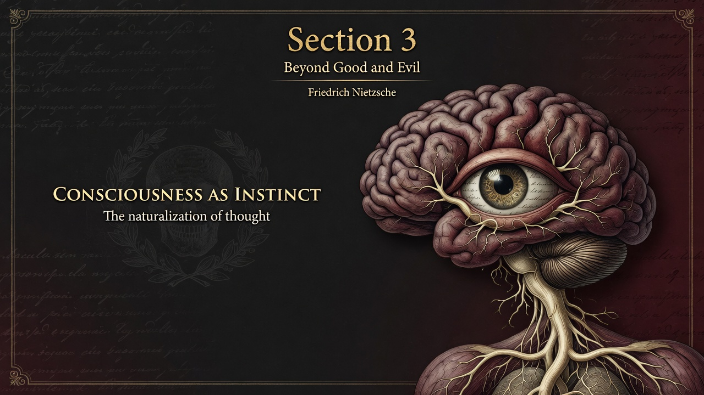

Most of our thinking, even in philosophy, runs on instinct—not pure reason. Our preferences for certainty or illusion are shaped by what helps us survive, not what is objectively true. Philosophers are not floating brains; their ideas come from their bodies and their way of living.
we prefer certainty to uncertainty, illusion to truth, not because one is objectively truer, but because th. The philosopher is so not a disembodied intellect contemplating eternal verities. He is a living creature whose most refined thoughts are secretly shaped by the needs and drives of his part.
All philosophy is, in part, a symptom of the body and its conditions of life. Conscious reasoning is often a post-hoc rationalization of deeper bodily and instinctual demands. The “impulse to knowledge” is rarely the father of a philosophy. another impulse has usually made use of knowledge (and mistaken knowledge) as its instrument.
This section naturalizes our drive for truth questioned in Section 1 and the free spirit invoked in the Preface. It undercuts any claim to pure rationalist morality and sets up the genealogical, psychological analyses that run through the rest of BGE (including the personal admission of philosophers in Section 6 and the will as multiplicity in Section 19). Thought is never neutral. it serves life — or a particular form of it.
Evolutionary psychology, embodied cognition, and cognitive-bias research have largely vindicated Nietzsche’s suspicion. Our most “rational” political, moral, and scientific arguments are frequently post-hoc justifications for deeper drives. the honest thinker learns to read the instincts operating behind even his or her own most treasured certainties — and to ask what mode of life a philosophy (including Nietzsche’s) is serving.
